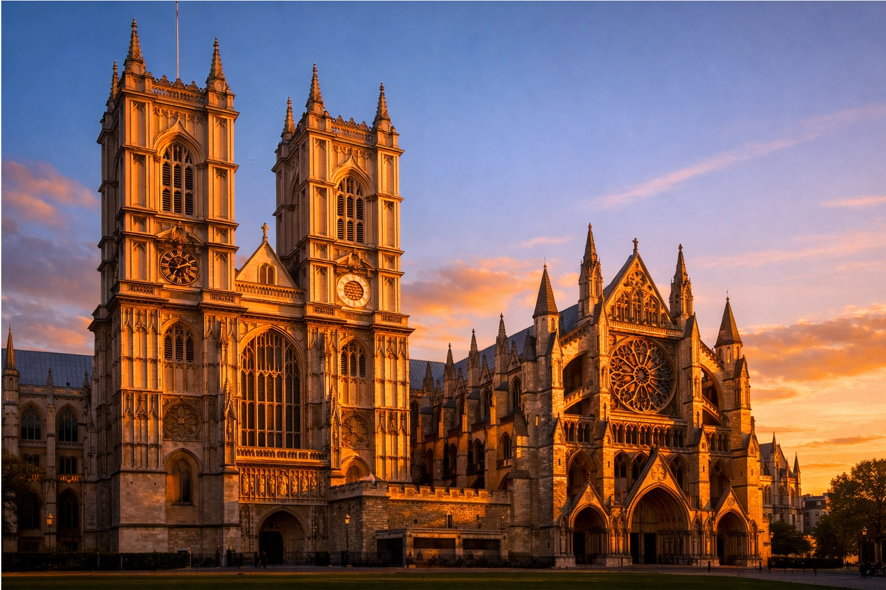
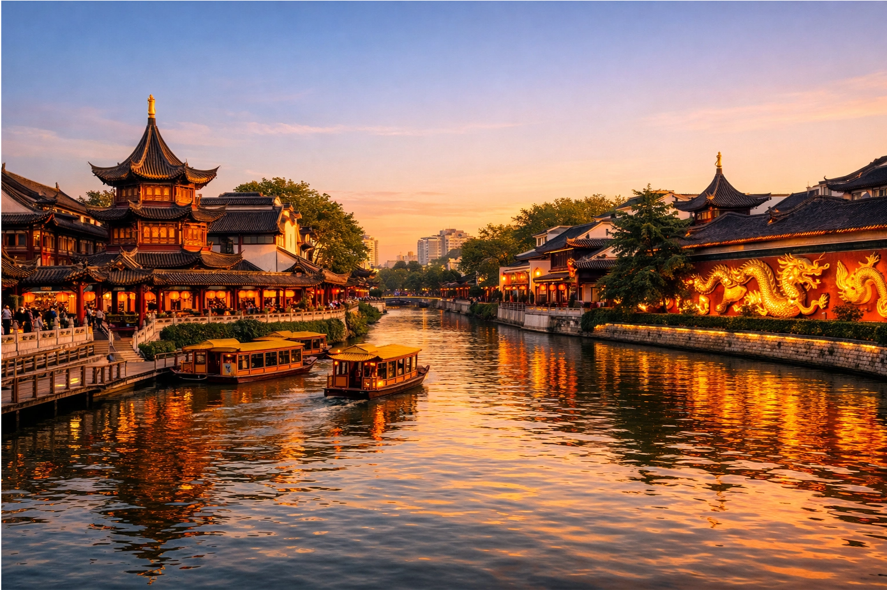
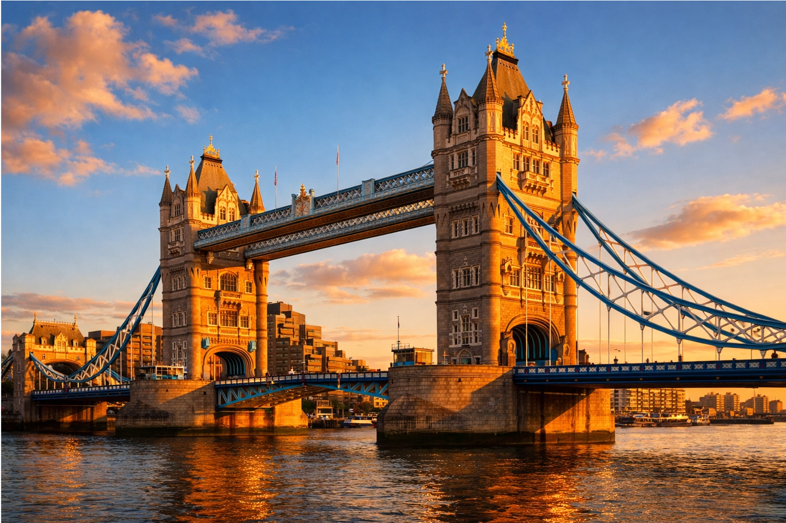

Historic Southern Capital Meets Global Metropolis
Where ancient dynastic legacy encounters modern imperial charm — exploring the enduring dialogue between Eastern resilience and Western tradition
Nanjing, one of China's ancient capitals and former seat of multiple dynasties, features profound sites like the Ming Xiaoling Mausoleum, Confucius Temple, and the massive Nanjing City Wall — symbols of imperial legacy, scholarly tradition, and defensive resilience.
London, the enduring capital of the United Kingdom, captivates with Westminster Abbey, the Tower of London, and Big Ben (Elizabeth Tower) — icons of monarchy, royal history, and parliamentary power.
One embodies the depth of Eastern history and cultural continuity; the other reflects centuries of Western governance and global influence. Together, they highlight shared themes of heritage, power, and cultural evolution.
UNESCO World Heritage site — the tomb of the Ming Dynasty founder, symbol of imperial grandeur and harmony with nature.

Historic coronation and burial site for British monarchs — a masterpiece of Gothic architecture and royal tradition.

Center of Confucian learning and imperial examinations — heart of traditional Chinese scholarship and culture.

Historic fortress, prison, and palace — guardian of the Crown Jewels and a millennium of royal intrigue.
The temple is known for its peaceful atmosphere and offers stunning views of the city.
Iconic symbol of British democracy — the clock tower and seat of parliamentary power.
From Nanjing's imperial examination system to London's historic universities — shared emphasis on education and meritocracy across cultures.
Ming emperors and British monarchs: parallels in dynastic power, palaces, and ceremonial traditions that inspire modern heritage tourism.
Ancient city walls in Nanjing meet London's historic towers — engineering feats that shaped city identity and defense strategies.